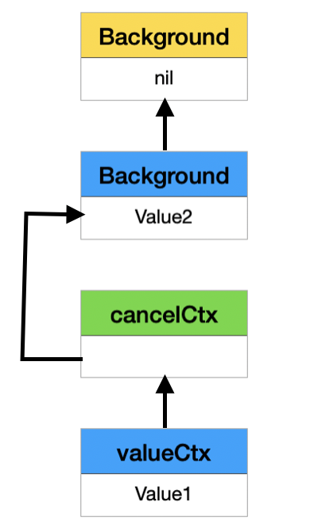

<!DOCTYPE html>
<html lang="zh-tw"><head>
  <meta charset="utf-8">
  <title>TsungJen.io</title>

  <!-- mobile responsive meta -->
  <meta name="viewport" content="width=device-width, initial-scale=1, maximum-scale=1">
  <meta name="description" content="Go Context Source Code review">
  <meta name="author" content="TsungJen Hsu">
  <meta name="generator" content="Hugo 0.71.0" />

  <!-- plugins -->
  
  <link rel="stylesheet" href="https://tsungjenh.github.io/plugins/bootstrap/bootstrap.min.css ">
  
  <link rel="stylesheet" href="https://tsungjenh.github.io/plugins/slick/slick.css ">
  
  <link rel="stylesheet" href="https://tsungjenh.github.io/plugins/themify-icons/themify-icons.css ">
  
  <link rel="stylesheet" href="https://tsungjenh.github.io/plugins/venobox/venobox.css ">
  

  <!-- Main Stylesheet -->
  
  <link rel="stylesheet" href="https://tsungjenh.github.io/scss/style.min.css" media="screen">

  <!--Favicon-->
  <link rel="shortcut icon" href="https://tsungjenh.github.io/images/favicon.png " type="image/x-icon">
  <link rel="icon" href="https://tsungjenh.github.io/images/favicon.png " type="image/x-icon">

</head><body>
<!-- preloader start -->
<div class="preloader">
  
</div>
<!-- preloader end -->
<!-- navigation -->
<header class="navigation">
  <div class="container">
    
    <nav class="navbar navbar-expand-lg navbar-white bg-transparent border-bottom pl-0">
      <a class="navbar-brand mobile-view" href="https://tsungjenh.github.io"></a>
      <button class="navbar-toggler border-0" type="button" data-toggle="collapse" data-target="#navigation">
        <i class="ti-menu h3"></i>
      </button>

      <div class="collapse navbar-collapse text-center" id="navigation">
        <div class="desktop-view">
          <ul class="navbar-nav mr-auto">
            
            <li class="nav-item">
              <a class="nav-link" href="https://github.com/tsungjenh"><i class="ti-github"></i></a>
            </li>
            
            <li class="nav-item">
              <a class="nav-link" href="https://www.linkedin.com/in/tsungjen-h-b76064130/"><i class="ti-linkedin"></i></a>
            </li>
            
          </ul>
        </div>

        <a class="navbar-brand mx-auto desktop-view" href="https://tsungjenh.github.io"></a>

        <ul class="navbar-nav">
          
          
          <li class="nav-item">
            <a class="nav-link" href="https://tsungjenh.github.io/about">About</a>
          </li>
          
          
          
          <li class="nav-item">
            <a class="nav-link" href="https://tsungjenh.github.io/blog">Post</a>
          </li>
          
          
        </ul>

        
        <!-- search -->
        <div class="search pl-lg-4">
          <button id="searchOpen" class="search-btn"><i class="ti-search"></i></button>
          <div class="search-wrapper">
            <form action="https://tsungjenh.github.io/search" class="h-100">
              <input class="search-box px-4" id="search-query" name="s" type="search" placeholder="Type & Hit Enter...">
            </form>
            <button id="searchClose" class="search-close"><i class="ti-close text-dark"></i></button>
          </div>
        </div>
        

        
      </div>
    </nav>
  </div>
</header>
<!-- /navigation -->

<section class="section-sm">
  <div class="container">
    <div class="row">
      <div class="col-lg-8 mx-auto">
        
        <a href="/categories/go"
          class="text-primary">Go</a>
        
        <h2>Go Context Source Code review</h2>
        <div class="mb-3 post-meta">
          <span>By TsungJen Hsu</span>
          
          <span class="border-bottom border-primary px-2 mx-1"></span>
          <span>29 July 2020</span>
          
        </div>
        
         <div style="height:300px; margin-bottom:8px">
         
         </div>
         
        <div class="content mb-5">
          <p> </p>
<h4 id="intro">Intro</h4>
<p>There are two classic methods in Go to handle concurrency. One is <strong>WaitGroup</strong>, the another one is our topic <code>Context</code>. In this article, we are going to explore the source code and see how it works behind the scenes. After the source code review, we will gain more insight of how to use Context properly.</p>
<ul>
<li>source code: <code>src/context/context.go</code></li>
</ul>
<hr>
<h4 id="interface">Interface</h4>
<p>First, Let look at the interface</p>
<div class="highlight"><pre style="color:#f8f8f2;background-color:#272822;-moz-tab-size:4;-o-tab-size:4;tab-size:4"><code class="language-go" data-lang="go">
<span style="color:#66d9ef">type</span> <span style="color:#a6e22e">Context</span> <span style="color:#66d9ef">interface</span> {

	<span style="color:#a6e22e">Deadline</span>() (<span style="color:#a6e22e">deadline</span> <span style="color:#a6e22e">time</span>.<span style="color:#a6e22e">Time</span>, <span style="color:#a6e22e">ok</span> <span style="color:#66d9ef">bool</span>)

	<span style="color:#a6e22e">Done</span>() <span style="color:#f92672">&lt;-</span><span style="color:#66d9ef">chan</span> <span style="color:#66d9ef">struct</span>{}

	<span style="color:#a6e22e">Err</span>() <span style="color:#66d9ef">error</span>

    <span style="color:#a6e22e">Value</span>(<span style="color:#a6e22e">key</span> <span style="color:#66d9ef">interface</span>{}) <span style="color:#66d9ef">interface</span>{}
    
}

</code></pre></div><p>There are 4 methods for this interface.</p>
<ol>
<li><strong>Deadline</strong>: Deadline is a method to get the deadline of the context. When deadline is due, the context will raise a cancellation automatically. The second return value <strong>ok</strong> is to indicate whether the context has a deadline or not. If <strong>ok</strong> equals false, there is no deadline for the context</li>
<li><strong>Done</strong>: Done is a method to get a read-only channel. We can read the channel and wait for the parent context to raise the cancellation</li>
<li><strong>Err</strong>: Err returns the reason to cancel</li>
<li><strong>Value</strong>: To get the value binded on the context. (We can bind the value to the context with a key)</li>
</ol>
<p>There is a basic implimentation, <strong>emptyCtx</strong>, for <strong>Context</strong> and 2 objects are initiated to use, <strong>Background</strong> and <strong>TODO</strong>.</p>
<div class="highlight"><pre style="color:#f8f8f2;background-color:#272822;-moz-tab-size:4;-o-tab-size:4;tab-size:4"><code class="language-go" data-lang="go">
<span style="color:#75715e">// An emptyCtx is never canceled, has no values, and has no deadline. It is not
</span><span style="color:#75715e">// struct{}, since vars of this type must have distinct addresses.
</span><span style="color:#75715e"></span><span style="color:#66d9ef">type</span> <span style="color:#a6e22e">emptyCtx</span> <span style="color:#66d9ef">int</span>

<span style="color:#66d9ef">func</span> (<span style="color:#f92672">*</span><span style="color:#a6e22e">emptyCtx</span>) <span style="color:#a6e22e">Deadline</span>() (<span style="color:#a6e22e">deadline</span> <span style="color:#a6e22e">time</span>.<span style="color:#a6e22e">Time</span>, <span style="color:#a6e22e">ok</span> <span style="color:#66d9ef">bool</span>) {
	<span style="color:#66d9ef">return</span>
}

<span style="color:#66d9ef">func</span> (<span style="color:#f92672">*</span><span style="color:#a6e22e">emptyCtx</span>) <span style="color:#a6e22e">Done</span>() <span style="color:#f92672">&lt;-</span><span style="color:#66d9ef">chan</span> <span style="color:#66d9ef">struct</span>{} {
	<span style="color:#66d9ef">return</span> <span style="color:#66d9ef">nil</span>
}

<span style="color:#66d9ef">func</span> (<span style="color:#f92672">*</span><span style="color:#a6e22e">emptyCtx</span>) <span style="color:#a6e22e">Err</span>() <span style="color:#66d9ef">error</span> {
	<span style="color:#66d9ef">return</span> <span style="color:#66d9ef">nil</span>
}

<span style="color:#66d9ef">func</span> (<span style="color:#f92672">*</span><span style="color:#a6e22e">emptyCtx</span>) <span style="color:#a6e22e">Value</span>(<span style="color:#a6e22e">key</span> <span style="color:#66d9ef">interface</span>{}) <span style="color:#66d9ef">interface</span>{} {
	<span style="color:#66d9ef">return</span> <span style="color:#66d9ef">nil</span>
}

<span style="color:#66d9ef">func</span> (<span style="color:#a6e22e">e</span> <span style="color:#f92672">*</span><span style="color:#a6e22e">emptyCtx</span>) <span style="color:#a6e22e">String</span>() <span style="color:#66d9ef">string</span> {
	<span style="color:#66d9ef">switch</span> <span style="color:#a6e22e">e</span> {
	<span style="color:#66d9ef">case</span> <span style="color:#a6e22e">background</span>:
		<span style="color:#66d9ef">return</span> <span style="color:#e6db74">&#34;context.Background&#34;</span>
	<span style="color:#66d9ef">case</span> <span style="color:#a6e22e">todo</span>:
		<span style="color:#66d9ef">return</span> <span style="color:#e6db74">&#34;context.TODO&#34;</span>
	}
	<span style="color:#66d9ef">return</span> <span style="color:#e6db74">&#34;unknown empty Context&#34;</span>
}

<span style="color:#66d9ef">var</span> (
	<span style="color:#a6e22e">background</span> = new(<span style="color:#a6e22e">emptyCtx</span>)
	<span style="color:#a6e22e">todo</span>       = new(<span style="color:#a6e22e">emptyCtx</span>)
)

<span style="color:#75715e">// Background returns a non-nil, empty Context. It is never canceled, has no
</span><span style="color:#75715e">// values, and has no deadline. It is typically used by the main function,
</span><span style="color:#75715e">// initialization, and tests, and as the top-level Context for incoming
</span><span style="color:#75715e">// requests.
</span><span style="color:#75715e"></span><span style="color:#66d9ef">func</span> <span style="color:#a6e22e">Background</span>() <span style="color:#a6e22e">Context</span> {
	<span style="color:#66d9ef">return</span> <span style="color:#a6e22e">background</span>
}

<span style="color:#75715e">// TODO returns a non-nil, empty Context. Code should use context.TODO when
</span><span style="color:#75715e">// it&#39;s unclear which Context to use or it is not yet available (because the
</span><span style="color:#75715e">// surrounding function has not yet been extended to accept a Context
</span><span style="color:#75715e">// parameter).
</span><span style="color:#75715e"></span><span style="color:#66d9ef">func</span> <span style="color:#a6e22e">TODO</span>() <span style="color:#a6e22e">Context</span> {
	<span style="color:#66d9ef">return</span> <span style="color:#a6e22e">todo</span>
}

</code></pre></div><p>We can see <code>emptyCtx</code> do nothing. All the methods simply return <strong>nil</strong>. We can not set the deadline, cancel or bind the value to the Context.<br>
<code>TODO</code> is temporary used when we are not sure which <strong>Context</strong> implimentation we want to use.<br>
<code>Background</code> is a used as a <strong>root</strong> Context and to create the child Context with following 4 functions.</p>
<div class="highlight"><pre style="color:#f8f8f2;background-color:#272822;-moz-tab-size:4;-o-tab-size:4;tab-size:4"><code class="language-go" data-lang="go">
<span style="color:#66d9ef">func</span> <span style="color:#a6e22e">WithCancel</span>(<span style="color:#a6e22e">parent</span> <span style="color:#a6e22e">Context</span>) (<span style="color:#a6e22e">ctx</span> <span style="color:#a6e22e">Context</span>, <span style="color:#a6e22e">cancel</span> <span style="color:#a6e22e">CancelFunc</span>) 
<span style="color:#66d9ef">func</span> <span style="color:#a6e22e">WithDeadline</span>(<span style="color:#a6e22e">parent</span> <span style="color:#a6e22e">Context</span>, <span style="color:#a6e22e">d</span> <span style="color:#a6e22e">time</span>.<span style="color:#a6e22e">Time</span>) (<span style="color:#a6e22e">Context</span>, <span style="color:#a6e22e">CancelFunc</span>)
<span style="color:#66d9ef">func</span> <span style="color:#a6e22e">WithTimeout</span>(<span style="color:#a6e22e">parent</span> <span style="color:#a6e22e">Context</span>, <span style="color:#a6e22e">timeout</span> <span style="color:#a6e22e">time</span>.<span style="color:#a6e22e">Duration</span>) (<span style="color:#a6e22e">Context</span>, <span style="color:#a6e22e">CancelFunc</span>)
<span style="color:#66d9ef">func</span> <span style="color:#a6e22e">WithValue</span>(<span style="color:#a6e22e">parent</span> <span style="color:#a6e22e">Context</span>, <span style="color:#a6e22e">key</span>, <span style="color:#a6e22e">val</span> <span style="color:#66d9ef">interface</span>{}) <span style="color:#a6e22e">Context</span>

</code></pre></div><p>Let&rsquo;s go through the functions one by one.</p>
<hr>
<h4 id="withcacnel">WithCacnel</h4>
<div class="highlight"><pre style="color:#f8f8f2;background-color:#272822;-moz-tab-size:4;-o-tab-size:4;tab-size:4"><code class="language-go" data-lang="go"><span style="color:#66d9ef">func</span> <span style="color:#a6e22e">WithCancel</span>(<span style="color:#a6e22e">parent</span> <span style="color:#a6e22e">Context</span>) (<span style="color:#a6e22e">ctx</span> <span style="color:#a6e22e">Context</span>, <span style="color:#a6e22e">cancel</span> <span style="color:#a6e22e">CancelFunc</span>) {
	<span style="color:#66d9ef">if</span> <span style="color:#a6e22e">parent</span> <span style="color:#f92672">==</span> <span style="color:#66d9ef">nil</span> {
		panic(<span style="color:#e6db74">&#34;cannot create context from nil parent&#34;</span>)
	}
	<span style="color:#a6e22e">c</span> <span style="color:#f92672">:=</span> <span style="color:#a6e22e">newCancelCtx</span>(<span style="color:#a6e22e">parent</span>)
	<span style="color:#a6e22e">propagateCancel</span>(<span style="color:#a6e22e">parent</span>, <span style="color:#f92672">&amp;</span><span style="color:#a6e22e">c</span>)
	<span style="color:#66d9ef">return</span> <span style="color:#f92672">&amp;</span><span style="color:#a6e22e">c</span>, <span style="color:#66d9ef">func</span>() { <span style="color:#a6e22e">c</span>.<span style="color:#a6e22e">cancel</span>(<span style="color:#66d9ef">true</span>, <span style="color:#a6e22e">Canceled</span>) }
}

<span style="color:#75715e">// newCancelCtx returns an initialized cancelCtx.
</span><span style="color:#75715e"></span><span style="color:#66d9ef">func</span> <span style="color:#a6e22e">newCancelCtx</span>(<span style="color:#a6e22e">parent</span> <span style="color:#a6e22e">Context</span>) <span style="color:#a6e22e">cancelCtx</span> {
	<span style="color:#66d9ef">return</span> <span style="color:#a6e22e">cancelCtx</span>{<span style="color:#a6e22e">Context</span>: <span style="color:#a6e22e">parent</span>}
}

<span style="color:#75715e">// A cancelCtx can be canceled. When canceled, it also cancels any children
</span><span style="color:#75715e">// that implement canceler.
</span><span style="color:#75715e"></span><span style="color:#66d9ef">type</span> <span style="color:#a6e22e">cancelCtx</span> <span style="color:#66d9ef">struct</span> {
	<span style="color:#a6e22e">Context</span>

	<span style="color:#a6e22e">mu</span>       <span style="color:#a6e22e">sync</span>.<span style="color:#a6e22e">Mutex</span>            <span style="color:#75715e">// protects following fields
</span><span style="color:#75715e"></span>	<span style="color:#a6e22e">done</span>     <span style="color:#66d9ef">chan</span> <span style="color:#66d9ef">struct</span>{}         <span style="color:#75715e">// created lazily, closed by first cancel call
</span><span style="color:#75715e"></span>	<span style="color:#a6e22e">children</span> <span style="color:#66d9ef">map</span>[<span style="color:#a6e22e">canceler</span>]<span style="color:#66d9ef">struct</span>{} <span style="color:#75715e">// set to nil by the first cancel call
</span><span style="color:#75715e"></span>	<span style="color:#a6e22e">err</span>      <span style="color:#66d9ef">error</span>                 <span style="color:#75715e">// set to non-nil by the first cancel call
</span><span style="color:#75715e"></span>}
</code></pre></div><p><code>WithCancel</code> will receive a parent context and return a <strong>cancelCtx</strong> object along with a <strong>cancel</strong> function. In the function we will</p>
<ol>
<li>first create a <strong>cancelCtx</strong></li>
<li>call <strong>propagateCancel</strong> to arrange this context to be canceled when parent is canceled.</li>
</ol>
<p>A <code>cancelCtx</code> has a</p>
<ol>
<li><strong>Context</strong> to point to its parent</li>
<li><strong>mutex</strong> to ensure thread-safe property (lock the context when we r/w the context),</li>
<li><strong>done</strong> to push the cacnel signal</li>
<li><strong>children</strong> to store its future children (this context can futhur be a parent context)</li>
<li><strong>err</strong> to store the reason when it is canceled.</li>
</ol>
<div class="highlight"><pre style="color:#f8f8f2;background-color:#272822;-moz-tab-size:4;-o-tab-size:4;tab-size:4"><code class="language-go" data-lang="go"><span style="color:#66d9ef">func</span> (<span style="color:#a6e22e">c</span> <span style="color:#f92672">*</span><span style="color:#a6e22e">cancelCtx</span>) <span style="color:#a6e22e">Value</span>(<span style="color:#a6e22e">key</span> <span style="color:#66d9ef">interface</span>{}) <span style="color:#66d9ef">interface</span>{} {
	<span style="color:#66d9ef">if</span> <span style="color:#a6e22e">key</span> <span style="color:#f92672">==</span> <span style="color:#f92672">&amp;</span><span style="color:#a6e22e">cancelCtxKey</span> {
		<span style="color:#66d9ef">return</span> <span style="color:#a6e22e">c</span>
	}
	<span style="color:#66d9ef">return</span> <span style="color:#a6e22e">c</span>.<span style="color:#a6e22e">Context</span>.<span style="color:#a6e22e">Value</span>(<span style="color:#a6e22e">key</span>)
}

<span style="color:#66d9ef">func</span> (<span style="color:#a6e22e">c</span> <span style="color:#f92672">*</span><span style="color:#a6e22e">cancelCtx</span>) <span style="color:#a6e22e">Done</span>() <span style="color:#f92672">&lt;-</span><span style="color:#66d9ef">chan</span> <span style="color:#66d9ef">struct</span>{} {
	<span style="color:#a6e22e">c</span>.<span style="color:#a6e22e">mu</span>.<span style="color:#a6e22e">Lock</span>()
	<span style="color:#66d9ef">if</span> <span style="color:#a6e22e">c</span>.<span style="color:#a6e22e">done</span> <span style="color:#f92672">==</span> <span style="color:#66d9ef">nil</span> {
		<span style="color:#a6e22e">c</span>.<span style="color:#a6e22e">done</span> = make(<span style="color:#66d9ef">chan</span> <span style="color:#66d9ef">struct</span>{})
	}
	<span style="color:#a6e22e">d</span> <span style="color:#f92672">:=</span> <span style="color:#a6e22e">c</span>.<span style="color:#a6e22e">done</span>
	<span style="color:#a6e22e">c</span>.<span style="color:#a6e22e">mu</span>.<span style="color:#a6e22e">Unlock</span>()
	<span style="color:#66d9ef">return</span> <span style="color:#a6e22e">d</span>
}

<span style="color:#66d9ef">func</span> (<span style="color:#a6e22e">c</span> <span style="color:#f92672">*</span><span style="color:#a6e22e">cancelCtx</span>) <span style="color:#a6e22e">Err</span>() <span style="color:#66d9ef">error</span> {
	<span style="color:#a6e22e">c</span>.<span style="color:#a6e22e">mu</span>.<span style="color:#a6e22e">Lock</span>()
	<span style="color:#a6e22e">err</span> <span style="color:#f92672">:=</span> <span style="color:#a6e22e">c</span>.<span style="color:#a6e22e">err</span>
	<span style="color:#a6e22e">c</span>.<span style="color:#a6e22e">mu</span>.<span style="color:#a6e22e">Unlock</span>()
	<span style="color:#66d9ef">return</span> <span style="color:#a6e22e">err</span>
}
</code></pre></div><p>The implementation is quite simple and the lock makes it thread-safe</p>
<p>After a look to <strong>cancelCtx</strong>, let&rsquo;s see <strong>propagateCancel</strong> function.</p>
<div class="highlight"><pre style="color:#f8f8f2;background-color:#272822;-moz-tab-size:4;-o-tab-size:4;tab-size:4"><code class="language-go" data-lang="go"><span style="color:#66d9ef">func</span> <span style="color:#a6e22e">propagateCancel</span>(<span style="color:#a6e22e">parent</span> <span style="color:#a6e22e">Context</span>, <span style="color:#a6e22e">child</span> <span style="color:#a6e22e">canceler</span>) {
	<span style="color:#a6e22e">done</span> <span style="color:#f92672">:=</span> <span style="color:#a6e22e">parent</span>.<span style="color:#a6e22e">Done</span>()
	<span style="color:#66d9ef">if</span> <span style="color:#a6e22e">done</span> <span style="color:#f92672">==</span> <span style="color:#66d9ef">nil</span> {
		<span style="color:#66d9ef">return</span> <span style="color:#75715e">// parent is never canceled
</span><span style="color:#75715e"></span>	}

	<span style="color:#66d9ef">select</span> {
	<span style="color:#66d9ef">case</span> <span style="color:#f92672">&lt;-</span><span style="color:#a6e22e">done</span>:
		<span style="color:#75715e">// parent is already canceled
</span><span style="color:#75715e"></span>		<span style="color:#a6e22e">child</span>.<span style="color:#a6e22e">cancel</span>(<span style="color:#66d9ef">false</span>, <span style="color:#a6e22e">parent</span>.<span style="color:#a6e22e">Err</span>())
		<span style="color:#66d9ef">return</span>
	<span style="color:#66d9ef">default</span>:
	}

	<span style="color:#66d9ef">if</span> <span style="color:#a6e22e">p</span>, <span style="color:#a6e22e">ok</span> <span style="color:#f92672">:=</span> <span style="color:#a6e22e">parentCancelCtx</span>(<span style="color:#a6e22e">parent</span>); <span style="color:#a6e22e">ok</span> {
		<span style="color:#a6e22e">p</span>.<span style="color:#a6e22e">mu</span>.<span style="color:#a6e22e">Lock</span>()
		<span style="color:#66d9ef">if</span> <span style="color:#a6e22e">p</span>.<span style="color:#a6e22e">err</span> <span style="color:#f92672">!=</span> <span style="color:#66d9ef">nil</span> {
			<span style="color:#75715e">// parent has already been canceled
</span><span style="color:#75715e"></span>			<span style="color:#a6e22e">child</span>.<span style="color:#a6e22e">cancel</span>(<span style="color:#66d9ef">false</span>, <span style="color:#a6e22e">p</span>.<span style="color:#a6e22e">err</span>)
		} <span style="color:#66d9ef">else</span> {
			<span style="color:#66d9ef">if</span> <span style="color:#a6e22e">p</span>.<span style="color:#a6e22e">children</span> <span style="color:#f92672">==</span> <span style="color:#66d9ef">nil</span> {
				<span style="color:#a6e22e">p</span>.<span style="color:#a6e22e">children</span> = make(<span style="color:#66d9ef">map</span>[<span style="color:#a6e22e">canceler</span>]<span style="color:#66d9ef">struct</span>{})
			}
			<span style="color:#a6e22e">p</span>.<span style="color:#a6e22e">children</span>[<span style="color:#a6e22e">child</span>] = <span style="color:#66d9ef">struct</span>{}{}
		}
		<span style="color:#a6e22e">p</span>.<span style="color:#a6e22e">mu</span>.<span style="color:#a6e22e">Unlock</span>()
	} <span style="color:#66d9ef">else</span> {
		<span style="color:#a6e22e">atomic</span>.<span style="color:#a6e22e">AddInt32</span>(<span style="color:#f92672">&amp;</span><span style="color:#a6e22e">goroutines</span>, <span style="color:#f92672">+</span><span style="color:#ae81ff">1</span>)
		<span style="color:#66d9ef">go</span> <span style="color:#66d9ef">func</span>() {
			<span style="color:#66d9ef">select</span> {
			<span style="color:#66d9ef">case</span> <span style="color:#f92672">&lt;-</span><span style="color:#a6e22e">parent</span>.<span style="color:#a6e22e">Done</span>():
				<span style="color:#a6e22e">child</span>.<span style="color:#a6e22e">cancel</span>(<span style="color:#66d9ef">false</span>, <span style="color:#a6e22e">parent</span>.<span style="color:#a6e22e">Err</span>())
			<span style="color:#66d9ef">case</span> <span style="color:#f92672">&lt;-</span><span style="color:#a6e22e">child</span>.<span style="color:#a6e22e">Done</span>():
			}
		}()
	}
}
</code></pre></div><p>What <strong>propagateCancel</strong> does is to</p>
<ol>
<li>check parent is already canceled (parent can be canceled, meanwhile, we call <strong>WithCancel</strong> function). If its parent is canceled, cancel itself as well.</li>
<li>If parent is not canceled. Check if parent is <strong>cancelCtx</strong>, if yes add itself as its parent&rsquo;s child. Otherwise, start a go routine to listen to a done signal and see if its parent is done (the goroutine will trigger the cacnellation when parent is done).</li>
</ol>
<hr>
<h4 id="withdeadline">WithDeadline</h4>
<div class="highlight"><pre style="color:#f8f8f2;background-color:#272822;-moz-tab-size:4;-o-tab-size:4;tab-size:4"><code class="language-go" data-lang="go"><span style="color:#66d9ef">func</span> <span style="color:#a6e22e">WithDeadline</span>(<span style="color:#a6e22e">parent</span> <span style="color:#a6e22e">Context</span>, <span style="color:#a6e22e">d</span> <span style="color:#a6e22e">time</span>.<span style="color:#a6e22e">Time</span>) (<span style="color:#a6e22e">Context</span>, <span style="color:#a6e22e">CancelFunc</span>) {
	<span style="color:#66d9ef">if</span> <span style="color:#a6e22e">parent</span> <span style="color:#f92672">==</span> <span style="color:#66d9ef">nil</span> {
		panic(<span style="color:#e6db74">&#34;cannot create context from nil parent&#34;</span>)
	}
	<span style="color:#66d9ef">if</span> <span style="color:#a6e22e">cur</span>, <span style="color:#a6e22e">ok</span> <span style="color:#f92672">:=</span> <span style="color:#a6e22e">parent</span>.<span style="color:#a6e22e">Deadline</span>(); <span style="color:#a6e22e">ok</span> <span style="color:#f92672">&amp;&amp;</span> <span style="color:#a6e22e">cur</span>.<span style="color:#a6e22e">Before</span>(<span style="color:#a6e22e">d</span>) {
		<span style="color:#75715e">// The current deadline is already sooner than the new one.
</span><span style="color:#75715e"></span>		<span style="color:#66d9ef">return</span> <span style="color:#a6e22e">WithCancel</span>(<span style="color:#a6e22e">parent</span>)
	}
	<span style="color:#a6e22e">c</span> <span style="color:#f92672">:=</span> <span style="color:#f92672">&amp;</span><span style="color:#a6e22e">timerCtx</span>{
		<span style="color:#a6e22e">cancelCtx</span>: <span style="color:#a6e22e">newCancelCtx</span>(<span style="color:#a6e22e">parent</span>),
		<span style="color:#a6e22e">deadline</span>:  <span style="color:#a6e22e">d</span>,
	}
	<span style="color:#a6e22e">propagateCancel</span>(<span style="color:#a6e22e">parent</span>, <span style="color:#a6e22e">c</span>)
	<span style="color:#a6e22e">dur</span> <span style="color:#f92672">:=</span> <span style="color:#a6e22e">time</span>.<span style="color:#a6e22e">Until</span>(<span style="color:#a6e22e">d</span>)
	<span style="color:#66d9ef">if</span> <span style="color:#a6e22e">dur</span> <span style="color:#f92672">&lt;=</span> <span style="color:#ae81ff">0</span> {
		<span style="color:#a6e22e">c</span>.<span style="color:#a6e22e">cancel</span>(<span style="color:#66d9ef">true</span>, <span style="color:#a6e22e">DeadlineExceeded</span>) <span style="color:#75715e">// deadline has already passed
</span><span style="color:#75715e"></span>		<span style="color:#66d9ef">return</span> <span style="color:#a6e22e">c</span>, <span style="color:#66d9ef">func</span>() { <span style="color:#a6e22e">c</span>.<span style="color:#a6e22e">cancel</span>(<span style="color:#66d9ef">false</span>, <span style="color:#a6e22e">Canceled</span>) }
	}
	<span style="color:#a6e22e">c</span>.<span style="color:#a6e22e">mu</span>.<span style="color:#a6e22e">Lock</span>()
	<span style="color:#66d9ef">defer</span> <span style="color:#a6e22e">c</span>.<span style="color:#a6e22e">mu</span>.<span style="color:#a6e22e">Unlock</span>()
	<span style="color:#66d9ef">if</span> <span style="color:#a6e22e">c</span>.<span style="color:#a6e22e">err</span> <span style="color:#f92672">==</span> <span style="color:#66d9ef">nil</span> {
		<span style="color:#a6e22e">c</span>.<span style="color:#a6e22e">timer</span> = <span style="color:#a6e22e">time</span>.<span style="color:#a6e22e">AfterFunc</span>(<span style="color:#a6e22e">dur</span>, <span style="color:#66d9ef">func</span>() {
			<span style="color:#a6e22e">c</span>.<span style="color:#a6e22e">cancel</span>(<span style="color:#66d9ef">true</span>, <span style="color:#a6e22e">DeadlineExceeded</span>)
		})
	}
	<span style="color:#66d9ef">return</span> <span style="color:#a6e22e">c</span>, <span style="color:#66d9ef">func</span>() { <span style="color:#a6e22e">c</span>.<span style="color:#a6e22e">cancel</span>(<span style="color:#66d9ef">true</span>, <span style="color:#a6e22e">Canceled</span>) }
}
</code></pre></div><p><code>WithDeadline</code> returns a copy of the parent context with the deadline adjusted to be no later than d. If the parent&rsquo;s deadline is already earlier than d, WithDeadline(parent, d) is semantically equivalent to parent. The returned context&rsquo;s Done channel is closed when the deadline expires, when the returned cancel function is called, or when the parent context&rsquo;s Done channel is closed, whichever happens first. Let&rsquo;s take a look at <strong>timerCtx</strong></p>
<div class="highlight"><pre style="color:#f8f8f2;background-color:#272822;-moz-tab-size:4;-o-tab-size:4;tab-size:4"><code class="language-go" data-lang="go"><span style="color:#66d9ef">type</span> <span style="color:#a6e22e">timerCtx</span> <span style="color:#66d9ef">struct</span> {
	<span style="color:#a6e22e">cancelCtx</span>
	<span style="color:#a6e22e">timer</span> <span style="color:#f92672">*</span><span style="color:#a6e22e">time</span>.<span style="color:#a6e22e">Timer</span> <span style="color:#75715e">// Under cancelCtx.mu.
</span><span style="color:#75715e"></span>
	<span style="color:#a6e22e">deadline</span> <span style="color:#a6e22e">time</span>.<span style="color:#a6e22e">Time</span>
}

<span style="color:#66d9ef">func</span> (<span style="color:#a6e22e">c</span> <span style="color:#f92672">*</span><span style="color:#a6e22e">timerCtx</span>) <span style="color:#a6e22e">Deadline</span>() (<span style="color:#a6e22e">deadline</span> <span style="color:#a6e22e">time</span>.<span style="color:#a6e22e">Time</span>, <span style="color:#a6e22e">ok</span> <span style="color:#66d9ef">bool</span>) {
	<span style="color:#66d9ef">return</span> <span style="color:#a6e22e">c</span>.<span style="color:#a6e22e">deadline</span>, <span style="color:#66d9ef">true</span>
}

<span style="color:#66d9ef">func</span> (<span style="color:#a6e22e">c</span> <span style="color:#f92672">*</span><span style="color:#a6e22e">timerCtx</span>) <span style="color:#a6e22e">String</span>() <span style="color:#66d9ef">string</span> {
	<span style="color:#66d9ef">return</span> <span style="color:#a6e22e">contextName</span>(<span style="color:#a6e22e">c</span>.<span style="color:#a6e22e">cancelCtx</span>.<span style="color:#a6e22e">Context</span>) <span style="color:#f92672">+</span> <span style="color:#e6db74">&#34;.WithDeadline(&#34;</span> <span style="color:#f92672">+</span>
		<span style="color:#a6e22e">c</span>.<span style="color:#a6e22e">deadline</span>.<span style="color:#a6e22e">String</span>() <span style="color:#f92672">+</span> <span style="color:#e6db74">&#34; [&#34;</span> <span style="color:#f92672">+</span>
		<span style="color:#a6e22e">time</span>.<span style="color:#a6e22e">Until</span>(<span style="color:#a6e22e">c</span>.<span style="color:#a6e22e">deadline</span>).<span style="color:#a6e22e">String</span>() <span style="color:#f92672">+</span> <span style="color:#e6db74">&#34;])&#34;</span>
}

<span style="color:#66d9ef">func</span> (<span style="color:#a6e22e">c</span> <span style="color:#f92672">*</span><span style="color:#a6e22e">timerCtx</span>) <span style="color:#a6e22e">cancel</span>(<span style="color:#a6e22e">removeFromParent</span> <span style="color:#66d9ef">bool</span>, <span style="color:#a6e22e">err</span> <span style="color:#66d9ef">error</span>) {
	<span style="color:#a6e22e">c</span>.<span style="color:#a6e22e">cancelCtx</span>.<span style="color:#a6e22e">cancel</span>(<span style="color:#66d9ef">false</span>, <span style="color:#a6e22e">err</span>)
	<span style="color:#66d9ef">if</span> <span style="color:#a6e22e">removeFromParent</span> {
		<span style="color:#75715e">// Remove this timerCtx from its parent cancelCtx&#39;s children.
</span><span style="color:#75715e"></span>		<span style="color:#a6e22e">removeChild</span>(<span style="color:#a6e22e">c</span>.<span style="color:#a6e22e">cancelCtx</span>.<span style="color:#a6e22e">Context</span>, <span style="color:#a6e22e">c</span>)
	}
	<span style="color:#a6e22e">c</span>.<span style="color:#a6e22e">mu</span>.<span style="color:#a6e22e">Lock</span>()
	<span style="color:#66d9ef">if</span> <span style="color:#a6e22e">c</span>.<span style="color:#a6e22e">timer</span> <span style="color:#f92672">!=</span> <span style="color:#66d9ef">nil</span> {
		<span style="color:#a6e22e">c</span>.<span style="color:#a6e22e">timer</span>.<span style="color:#a6e22e">Stop</span>()
		<span style="color:#a6e22e">c</span>.<span style="color:#a6e22e">timer</span> = <span style="color:#66d9ef">nil</span>
	}
	<span style="color:#a6e22e">c</span>.<span style="color:#a6e22e">mu</span>.<span style="color:#a6e22e">Unlock</span>()
}
</code></pre></div><p><code>timerCtx</code> is built on <strong>cancelCtx</strong>, it has</p>
<ol>
<li><strong>cancelCtx</strong> created with its parent. It takes care of the cancellation process.</li>
<li><strong>deadline</strong> to store a deadline, we can get it by calling <strong>Deadline</strong> method.</li>
</ol>
<ul>
<li>The cancellation is quite the same as <strong>cancelCtx</strong> except it needs to stop the timer when cancellation is triggered.</li>
</ul>
<hr>
<h4 id="withtimeout">WithTimeout</h4>
<div class="highlight"><pre style="color:#f8f8f2;background-color:#272822;-moz-tab-size:4;-o-tab-size:4;tab-size:4"><code class="language-go" data-lang="go"><span style="color:#66d9ef">func</span> <span style="color:#a6e22e">WithTimeout</span>(<span style="color:#a6e22e">parent</span> <span style="color:#a6e22e">Context</span>, <span style="color:#a6e22e">timeout</span> <span style="color:#a6e22e">time</span>.<span style="color:#a6e22e">Duration</span>) (<span style="color:#a6e22e">Context</span>, <span style="color:#a6e22e">CancelFunc</span>) {
	<span style="color:#66d9ef">return</span> <span style="color:#a6e22e">WithDeadline</span>(<span style="color:#a6e22e">parent</span>, <span style="color:#a6e22e">time</span>.<span style="color:#a6e22e">Now</span>().<span style="color:#a6e22e">Add</span>(<span style="color:#a6e22e">timeout</span>))
}
</code></pre></div><p><code>WithTimeout</code> is a the same as <strong>WithDeadline</strong>. It takes a <strong>time.Duration</strong> as an input, the deadline will be <strong>now + duration</strong>.</p>
<hr>
<h4 id="withvalue">WithValue</h4>
<div class="highlight"><pre style="color:#f8f8f2;background-color:#272822;-moz-tab-size:4;-o-tab-size:4;tab-size:4"><code class="language-go" data-lang="go"><span style="color:#75715e">// WithValue returns a copy of parent in which the value associated with key is
</span><span style="color:#75715e">// val.
</span><span style="color:#75715e">//
</span><span style="color:#75715e">// Use context Values only for request-scoped data that transits processes and
</span><span style="color:#75715e">// APIs, not for passing optional parameters to functions.
</span><span style="color:#75715e">//
</span><span style="color:#75715e">// The provided key must be comparable and should not be of type
</span><span style="color:#75715e">// string or any other built-in type to avoid collisions between
</span><span style="color:#75715e">// packages using context. Users of WithValue should define their own
</span><span style="color:#75715e">// types for keys. To avoid allocating when assigning to an
</span><span style="color:#75715e">// interface{}, context keys often have concrete type
</span><span style="color:#75715e">// struct{}. Alternatively, exported context key variables&#39; static
</span><span style="color:#75715e">// type should be a pointer or interface.
</span><span style="color:#75715e"></span><span style="color:#66d9ef">func</span> <span style="color:#a6e22e">WithValue</span>(<span style="color:#a6e22e">parent</span> <span style="color:#a6e22e">Context</span>, <span style="color:#a6e22e">key</span>, <span style="color:#a6e22e">val</span> <span style="color:#66d9ef">interface</span>{}) <span style="color:#a6e22e">Context</span> {
	<span style="color:#66d9ef">if</span> <span style="color:#a6e22e">parent</span> <span style="color:#f92672">==</span> <span style="color:#66d9ef">nil</span> {
		panic(<span style="color:#e6db74">&#34;cannot create context from nil parent&#34;</span>)
	}
	<span style="color:#66d9ef">if</span> <span style="color:#a6e22e">key</span> <span style="color:#f92672">==</span> <span style="color:#66d9ef">nil</span> {
		panic(<span style="color:#e6db74">&#34;nil key&#34;</span>)
	}
	<span style="color:#66d9ef">if</span> !<span style="color:#a6e22e">reflectlite</span>.<span style="color:#a6e22e">TypeOf</span>(<span style="color:#a6e22e">key</span>).<span style="color:#a6e22e">Comparable</span>() {
		panic(<span style="color:#e6db74">&#34;key is not comparable&#34;</span>)
	}
	<span style="color:#66d9ef">return</span> <span style="color:#f92672">&amp;</span><span style="color:#a6e22e">valueCtx</span>{<span style="color:#a6e22e">parent</span>, <span style="color:#a6e22e">key</span>, <span style="color:#a6e22e">val</span>}
}

<span style="color:#75715e">// A valueCtx carries a key-value pair. It implements Value for that key and
</span><span style="color:#75715e">// delegates all other calls to the embedded Context.
</span><span style="color:#75715e"></span><span style="color:#66d9ef">type</span> <span style="color:#a6e22e">valueCtx</span> <span style="color:#66d9ef">struct</span> {
	<span style="color:#a6e22e">Context</span>
	<span style="color:#a6e22e">key</span>, <span style="color:#a6e22e">val</span> <span style="color:#66d9ef">interface</span>{}
}

<span style="color:#75715e">// stringify tries a bit to stringify v, without using fmt, since we don&#39;t
</span><span style="color:#75715e">// want context depending on the unicode tables. This is only used by
</span><span style="color:#75715e">// *valueCtx.String().
</span><span style="color:#75715e"></span><span style="color:#66d9ef">func</span> <span style="color:#a6e22e">stringify</span>(<span style="color:#a6e22e">v</span> <span style="color:#66d9ef">interface</span>{}) <span style="color:#66d9ef">string</span> {
	<span style="color:#66d9ef">switch</span> <span style="color:#a6e22e">s</span> <span style="color:#f92672">:=</span> <span style="color:#a6e22e">v</span>.(<span style="color:#66d9ef">type</span>) {
	<span style="color:#66d9ef">case</span> <span style="color:#a6e22e">stringer</span>:
		<span style="color:#66d9ef">return</span> <span style="color:#a6e22e">s</span>.<span style="color:#a6e22e">String</span>()
	<span style="color:#66d9ef">case</span> <span style="color:#66d9ef">string</span>:
		<span style="color:#66d9ef">return</span> <span style="color:#a6e22e">s</span>
	}
	<span style="color:#66d9ef">return</span> <span style="color:#e6db74">&#34;&lt;not Stringer&gt;&#34;</span>
}

<span style="color:#66d9ef">func</span> (<span style="color:#a6e22e">c</span> <span style="color:#f92672">*</span><span style="color:#a6e22e">valueCtx</span>) <span style="color:#a6e22e">String</span>() <span style="color:#66d9ef">string</span> {
	<span style="color:#66d9ef">return</span> <span style="color:#a6e22e">contextName</span>(<span style="color:#a6e22e">c</span>.<span style="color:#a6e22e">Context</span>) <span style="color:#f92672">+</span> <span style="color:#e6db74">&#34;.WithValue(type &#34;</span> <span style="color:#f92672">+</span>
		<span style="color:#a6e22e">reflectlite</span>.<span style="color:#a6e22e">TypeOf</span>(<span style="color:#a6e22e">c</span>.<span style="color:#a6e22e">key</span>).<span style="color:#a6e22e">String</span>() <span style="color:#f92672">+</span>
		<span style="color:#e6db74">&#34;, val &#34;</span> <span style="color:#f92672">+</span> <span style="color:#a6e22e">stringify</span>(<span style="color:#a6e22e">c</span>.<span style="color:#a6e22e">val</span>) <span style="color:#f92672">+</span> <span style="color:#e6db74">&#34;)&#34;</span>
}

<span style="color:#66d9ef">func</span> (<span style="color:#a6e22e">c</span> <span style="color:#f92672">*</span><span style="color:#a6e22e">valueCtx</span>) <span style="color:#a6e22e">Value</span>(<span style="color:#a6e22e">key</span> <span style="color:#66d9ef">interface</span>{}) <span style="color:#66d9ef">interface</span>{} {
	<span style="color:#66d9ef">if</span> <span style="color:#a6e22e">c</span>.<span style="color:#a6e22e">key</span> <span style="color:#f92672">==</span> <span style="color:#a6e22e">key</span> {
		<span style="color:#66d9ef">return</span> <span style="color:#a6e22e">c</span>.<span style="color:#a6e22e">val</span>
	}
	<span style="color:#66d9ef">return</span> <span style="color:#a6e22e">c</span>.<span style="color:#a6e22e">Context</span>.<span style="color:#a6e22e">Value</span>(<span style="color:#a6e22e">key</span>)
}
</code></pre></div><p><code>WithValue</code> returns a copy of parent in which the value associated with <strong>key</strong> is <strong>val</strong></p>
<p><code>valueCtx</code> has a</p>
<ol>
<li><strong>context</strong> point to its parent</li>
<li><strong>key</strong>, <strong>value</strong> to store the k-v pair</li>
</ol>
<p>The lookup for the value is a recursive process. A goroutine will recursively find the key. If the key is not existed in all the nodes. the <strong>root</strong> (Background) will return a <strong>nil</strong> (emptyCtx implementation).</p>
<figure>
     
</figure>

<blockquote>
<p>Noted that valueCtx doesn&rsquo;t ensure the val is thread-safe.</p>
</blockquote>
<hr>
<h4 id="conclusion">Conclusion</h4>
<p>After we explore the source code of <code>Context</code>. Let&rsquo;s have conclusion belows</p>
<ol>
<li>Do not put Context inside the structure. Pass it as a parameter</li>
<li>Make the Context the first paramter in a function</li>
<li>Do not pass nil when you passing Context. It will cause panic if someone uses nil to create child Context. Pass <strong>context.TODO</strong> if you dont know what to pass.</li>
<li>Use valueCtx properly, pass the required data only (such as request meta data). <strong>valueCtx</strong> doesn&rsquo;t ensure thread-safe for value, passing unnecessary data may cause dirty data issues.</li>
<li>Context itself is thread-safe, feel free pass it to different goroutines.</li>
</ol>

        </div>

        
        <div id="disqus_thread"></div>
<script type="application/javascript">
    var disqus_config = function () {
    
    
    
    };
    (function() {
        if (["localhost", "127.0.0.1"].indexOf(window.location.hostname) != -1) {
            document.getElementById('disqus_thread').innerHTML = 'Disqus comments not available by default when the website is previewed locally.';
            return;
        }
        var d = document, s = d.createElement('script'); s.async = true;
        s.src = '//' + "tsungjen" + '.disqus.com/embed.js';
        s.setAttribute('data-timestamp', +new Date());
        (d.head || d.body).appendChild(s);
    })();
</script>
<noscript>Please enable JavaScript to view the <a href="https://disqus.com/?ref_noscript">comments powered by Disqus.</a></noscript>
<a href="https://disqus.com" class="dsq-brlink">comments powered by <span class="logo-disqus">Disqus</span></a>
      </div>
    </div>
  </div>
</section>

<footer>
  <div class="container border-top py-4">
    <div class="row">
      <div class="col-lg-4 col-sm-6 mb-5">
        <h6 class="mb-4">Contact Me</h6>
        <ul class="list-unstyled">
          <li class="mb-3"><i class="ti-location-pin mr-3 text-primary"></i>Singapore</li>
          <li class="mb-3"><a class="text-dark" href="mailto:pawanhsu@gmail.com"><i
                class="ti-email mr-3 text-primary"></i>pawanhsu@gmail.com</a>
          </li>
        </ul>
      </div>
      <div class="col-lg-4 col-sm-6 mb-5">
        <h6 class="mb-4">Social Contacts</h6>
        <ul class="list-unstyled">
          
          <li class="mb-3"><a class="text-dark" href="https://github.com/tsungjenh">github</a></li>
          
          <li class="mb-3"><a class="text-dark" href="https://www.linkedin.com/in/tsungjen-h-b76064130/">linkedin</a></li>
          
        </ul>
      </div>
      <div class="col-lg-4 col-sm-6 mb-5">
        <h6 class="mb-4">Categories</h6>
        <ul class="list-unstyled">
          <li class="mb-3"><a class="text-dark"
              href="/categories/go">Go</a>
          </li>
          <li class="mb-3"><a class="text-dark"
              href="/categories/kafka">Kafka</a>
          </li>
          <li class="mb-3"><a class="text-dark"
              href="/categories/mysql">Mysql</a>
          </li>
          <li class="mb-3"><a class="text-dark"
              href="/categories/redis">Redis</a>
          </li>
          <li class="mb-3"><a class="text-dark"
              href="/categories/vim">Vim</a>
          </li>
          <li class="mb-3"><a class="text-dark"
              href="/categories/vscode">Vscode</a>
          </li>
        </ul>
      </div>
      <div class="col-12 text-center">
        | copyright © 2020 <a href="https://themefisher.com">Themefisher</a> All Rights Reserved |
      </div>
    </div>
  </div>
</footer>

<script>
  var indexURL = "https://tsungjenh.github.io/index.json"
</script>

<!-- JS Plugins -->

<script src="https://tsungjenh.github.io/plugins/jQuery/jquery.min.js"></script>

<script src="https://tsungjenh.github.io/plugins/bootstrap/bootstrap.min.js"></script>

<script src="https://tsungjenh.github.io/plugins/slick/slick.min.js"></script>

<script src="https://tsungjenh.github.io/plugins/venobox/venobox.min.js"></script>

<script src="https://tsungjenh.github.io/plugins/search/fuse.min.js"></script>

<script src="https://tsungjenh.github.io/plugins/search/mark.js"></script>

<script src="https://tsungjenh.github.io/plugins/search/search.js"></script>

<!-- Main Script -->

<script src="https://tsungjenh.github.io/js/script.min.js"></script>
<!-- google analitycs -->
<script>
  (function (i, s, o, g, r, a, m) {
    i['GoogleAnalyticsObject'] = r;
    i[r] = i[r] || function () {
      (i[r].q = i[r].q || []).push(arguments)
    }, i[r].l = 1 * new Date();
    a = s.createElement(o),
      m = s.getElementsByTagName(o)[0];
    a.async = 1;
    a.src = g;
    m.parentNode.insertBefore(a, m)
  })(window, document, 'script', '//www.google-analytics.com/analytics.js', 'ga');
  ga('create', 'Your ID', 'auto');
  ga('send', 'pageview');
</script></body>
</html>